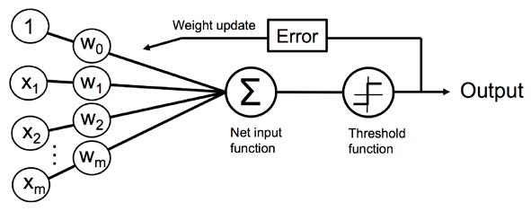
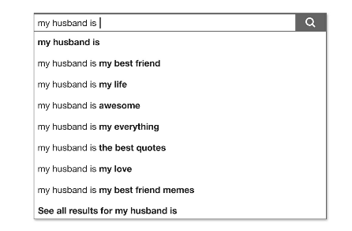
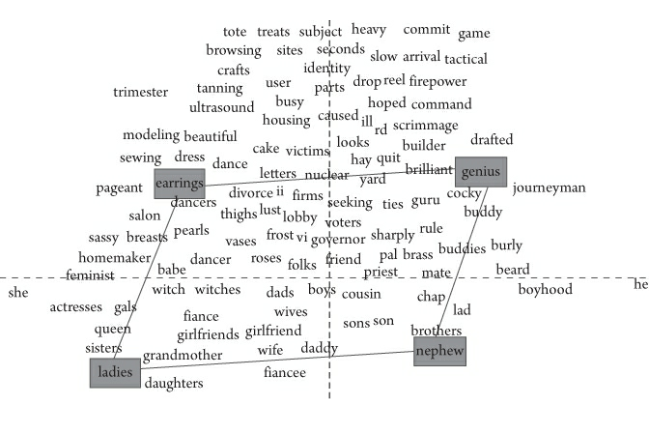
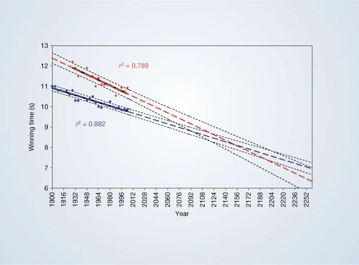
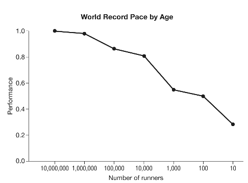
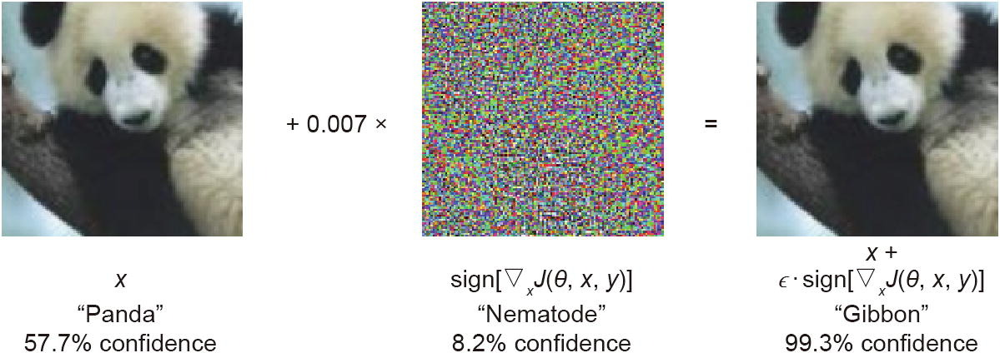
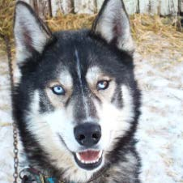
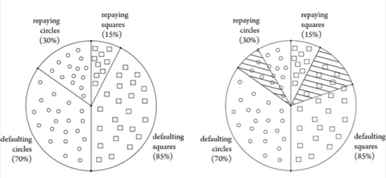
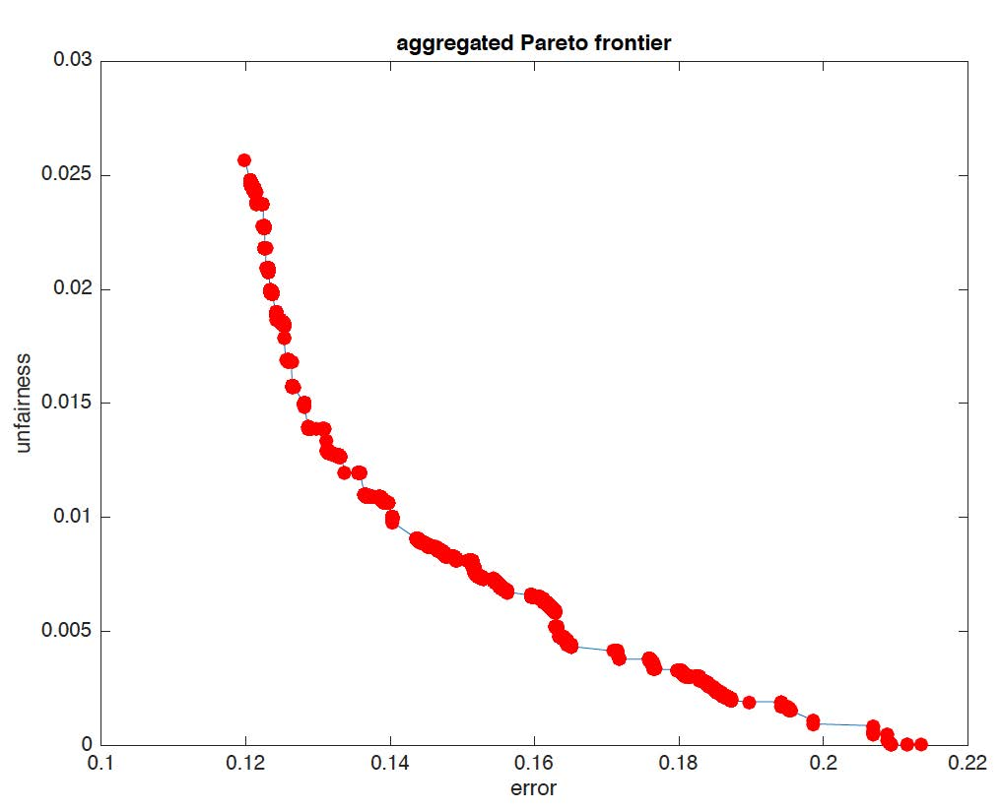
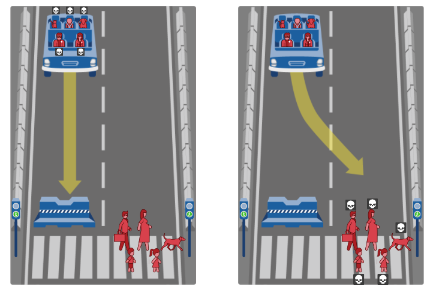

Big Data, Black Boxes, and Bias¶
Dr. David Elliott¶
1.1. Introduction
1.2. Big Data and Bias
1.3. Machine Injustice
1.4. Black Boxes
1.5. When Models Fail
1.6. Ethical Algorithms
Why you should watch these lectures/read the notes!
Sure its not on the exam... but you want to be a good person as well as land a job right?
Machine Learning Scientist - Recruiting Technology Scotland, Edinburgh&utm_source=indeed.com&utm_campaign=all_amazon&utm_medium=job_aggregator&utm_content=organic&dclid=CjgKEAjwjPaCBhDSyYfW-f2jzysSJABBs5ZoZ968EhXTmHisT_mWFFcrY734vNMfD_dUYICkkpi_6vD_BwE)
"...Our ideal candidate is an experienced ML scientist who has a track-record of statistical analysis and building models to solve real business problems, who has great leadership and communication skills, and who has a passion for fairness and explainability in ML systems."
Tenure-Track/Tenured Professor of Computer Science - Artificial Intelligence
"...we are particularly interested in machine learning; natural language processing; information retrieval; human-computer interaction; vision; fairness, accountability, transparency, and justice in AI."
Notes
- above is a quick (admittedly biased) sample of current ML job listings on Indeed, where the topics in these lectures feature prominantly!
- "The White House report “Preparing for the Future of Artificial Intelligence” highlights the need for training in both ethics and security: Ethical training for AI practitioners and students is a necessary part of the solution.""14
- "Ideally, every student learning AI, computer science, or data science would be exposed to curriculum and discussion on related ethics and security topics...ethical training should be augmented with technical tools and methods for putting good intentions into practice..."14
- "In many fields, ethics is an essential part of professional education. This isn’t true in computer science, data science, artificial intelligence, or any related field."14
1.1. Introduction ¶
The Navy revealed the embryo of an electronic computer today that it expects will be able to walk, talk, see, write, reproduce itself and be conscious of its existence.
July 8, 1958, The New York Times
The embryo in question is a perceptron, a simple logical circuit designed to mimic a biological neuron.
It takes a set of numerical values as inputs, and then spits out either a 0 or a 1.

Notes2
- The inventor of the perceptron, Frank Rosenblatt, was a psychologist by training, with broad interests in astronomy and neurobiology.
- He used a two-million-dollar IBM 704 computer to simulate his first perceptron.
- He also had a knack for selling big ideas and described his work in grandiose terms.
- His machine, he told The New York Times, would think the way that humans do and learn from experience. Someday, he predicted, his perceptrons would be able to recognize faces and translate speech in real time. Perceptrons would be able to assemble other perceptrons, and perhaps even attain consciousness. Someday they could become our eyes and ears in the universe, sent out beyond the bounds of Earth to explore the planets and stars on our behalf.
Connect enough of these perceptrons together in the right ways, and you can build:
- a chess-playing computer,
- a self-driving car,
- an algorithm that translates speech.
Though the computer hardware is vastly more powerful, the basic approach remains similar to how it was a half century ago.
The hype hasn’t diminished2.
...will make possible a new generation of artificial intelligence [AI] systems that will perform some functions that humans do with ease: see, speak, listen, navigate, manipulate and control.
December 28, 2013, The New York Times
Notes
- Hype Machine:
- Newspapers gush about the latest breakthrough.
- AI jobs are paying superstar salaries.
- Tech firms are wooing away from campus professors with AI expertise.
- Venture capital firms are throwing money at anyone who can say "deep learning" with a straight face.
Advances in AI are great and are spurring a lot of economic activity. However there is currently unreasonable expectations, which drives2:
- irresponsible research in both industry and academia,
- threats to personal privacy,
- motivates misdirected policy.
"Policy makers [are] earnestly having meetings to discuss the rights of robots when they should be talking about discrimination in algorithmic decision making."
Zachary Lipton, AI researcher at Carnegie Mellon University
Notes
- "Researchers and technologists spend far too much time focusing on the sexy what-might-be, and far too little time on the important what-is."2
- Andrew Ng says worrying about the dangers of superintelligence right now is like worrying about overpopulation on mars. It could concivably happen, but is quite distant.
- But the opsing view is that if we dont take the treat seriously now, there could be exponential growth in intelligence and then its too late.
- The thing is, ML might just return deminishing marginal returns over time (the more we put in the less we get out).
"[AI poses a] fundamental risk to the existence of human civilization." Elon Musk, 2017
Compared to the human brain, machine learning isn’t especially efficient.
A machine learning program requires millions or billions of data points to create its statistical models.
Its only now those petabytes of data are now readily available, along with powerful computers to process them13.
Notes
- "There is a vast gulf between AI alarmism in the popular press, and the reality of where AI research actually stands."2
- A child can learn that hobs (stoves) are hot by touching it once, connects the hot metal and her throbbing hand, and picks up the word for it: burn.
Extra: Facebook Inventing Skynet?
"AI Is Inventing Languages Humans Can’t Understand. Should We Stop It?" Fast Company article
BOB THE BOT: "I can can I I everything else."
ALICE THE BOT: "Balls have zero to me to me to me to me to me to me to me to me to."
BOB: "You I everything else."
ALICE: "Balls have a ball to me to me to me to me to me to me to me to me."
The original Facebook blog post simply described a chatbot evolving the repetition of nonsensical sentences, which was dramatically distorted to a story about saving the human race.
"There was no panic," one researcher said, "and the project hasn’t been shut down."
Notes
- "The story described a Facebook research project gone awry. While trying to build a chatbot that could carry on a convincing conversation, researchers tried having computer algorithms train one another to speak. But the speech that the algorithms developed was nothing like human language. Fast Company reported that the researchers quickly shut down the project. Skynet was officially on its way to self-awareness, but disaster had been averted—or so the story, and many others like it, suggested."2
For many jobs, machine learning proves to be more flexible and nuanced than the traditional programs governed by rules13.
Rosenblatt deserves credit because many of his ambitious predictions have come true:
- Facial recognition technology,
- Virtual assistants,
- Machine translation systems,
- Stock-trading bots,...
...are all built using perceptron-like algorithms2.
Most of the recent breakthroughs in machine learning are due to the masses of data available and the processing power to deal with it, rather than a fundamentally different approach.
Notes
- Perceptrons used in todays deep learning models no longer reflect human biology, they are just inspired by it.
1.2. Big Data and Bias ¶
We live in an ever increasing quantified world, where everything is counted, measured, and analyzed2:
- Smartphones count our steps, measure our calls, and trace our movements.
- "Smart appliances" monitor use and learn about daily routines.
- Implanted medical devices continuously collect data and predict emergencies.
- Sensors and cameras are across our cities monitoring traffic, air quality, and pedestrian identities.
We've also moved from companies paying customers to complete surveys to them recording what we do2.
Notes
"Data collection is a big business. Data is valuable: “the new oil,” as the Economist proclaimed. We’ve known that for some time. But the public provides the data under the assumption that we, the public, benefit from it. We also assume that data is collected and stored responsibly, and those who supply the data won’t be harmed."14
What do they know2?
- Facebook knows whom we know; Google knows what we want to know.
- Uber knows where we want to go; Amazon knows what we want to buy.
- Match knows whom we want to marry; Tinder knows whom we want to be swiped by.
Mathematicians and statisticians use this data to study our desires, movements, and spending power.
This is the "Big Data economy", and it promises spectacular gains.
Algorithms not only save time and money but are "fair" and "objective".
Numbers and data suggest precision and imply a scientific approach, appearing to have an existence separate from the humans reporting them.

Notes
Models don't involve prejudiced humans, just machines processing cold numbers right?13.
Numbers feel objective, but are easily manipulated.
"It’s like the old joke:2
A mathematician, an engineer, and an accountant are applying for a job. They are led to the interview room and given a math quiz. The first problem is a warm-up: What is 2 + 2? The mathematician rolls her eyes, writes the numeral 4, and moves on. The engineer pauses for a moment, then writes “Approximately 4.” The accountant looks around nervously, then gets out of his chair and walks over to the fellow administering the test. “Before I put anything in writing,” he says in a low whisper, “what do you want it to be?
Algorithms can go wrong and be damaging just due to simple human incompetence or malfeasance.
But also the fault could be:
- Training Data
- Result Interpretation
- Algorithms Design Principles
In these (worryingly common) cases, it does not matter how expertly and carefully the algorithms are implimented.
Notes
- "Society’s most influential algorithms—from Google search and Facebook’s News Feed to credit scoring and health risk assessment algorithms—are generally developed by highly trained scientists and engineers who are carefully applying well-understood design principles."15
"No algorithm, no matter how logically sound, can overcome flawed training data."2
Good training data is difficult and expensive to obtain.
Training data often comes from the real world, but the real world is full of human errors and biases.
Notes
- "For various reasons, the glamorous side of machine learning research involves developing new algorithms or tweaking old ones. But what is more sorely needed is research on how to select appropriate, representative data. Advances in that domain would pay rich dividends."2
Sampling Error¶
As exact counts and exhaustive measurements are nearly always impossible, we take small samples of a larger group and using that information to make broader inferences.
Example2
"If one measured only a half dozen men and took their average height, it would be easy to get a misleading estimate simply by chance. Perhaps you sampled a few unusually tall guys. Fortunately, with large samples things tend to average out, and sampling error will have a minimal effect on the outcome."
Measurement Error¶
This is more of a systematic error caused by or measurement method.
Example2
"Researchers might ask subjects to report their own heights, but men commonly exaggerate their heights—and shorter men exaggerate more than taller men."
The more any quantitative social indicator is used for social decision-making, the more subject it will be to corruption pressures and the more apt it will be to distort and corrupt the social processes it is intended to monitor.
Donald Campbell
The algorithms these measures are used as input for, in turn, can modify behaviour.
Example13
Standardized testing can be valuable indicators of general school achievement under normal teaching conditions.
But when test scores become the goal of teaching, they both lose their value as indicators and distort the educational process.
Notes
- ... in other words, when a measure becomes a target, it ceases to be a good measure.
- "investigations by the Washington Post and USA Today revealed a high level of erasures on the standardized tests... A high rate of corrected answers points to a greater likelihood of cheating. In some of the schools, as many as 70 percent of the classrooms were suspected."13
- "Students in the Chinese city of Zhongxiang had a reputation for acing the national standardized test, or gaokao, and winning places in China’s top universities. They did so well, in fact, that authorities began to suspect they were cheating. Suspicions grew in 2012, according to a report in Britain’s Telegraph, when provincial authorities found ninety-nine identical copies of a single test.The next year, as students in Zhongxiang arrived to take the exam, they were dismayed to be funneled through metal detectors and forced to relinquish their mobile phones. Some surrendered tiny transmitters disguised as pencil erasers. Once inside, the students found themselves accompanied by fifty-four investigators from different school districts. A few of these investigators crossed the street to a hotel, where they found groups positioned to communicate with the students through their transmitters. The response to this crackdown on cheating was volcanic. Some two thousand stone-throwing protesters gathered in the street outside the school. They chanted, “We want fairness. There is no fairness if you don’t let us cheat.”...In a system in which cheating is the norm, following the rules amounts to a handicap.13
Selection Bias¶
Selection bias arises when sampled individuals differ systematically from the population eligible for your study.
Example2
"Suppose you decide to estimate people’s heights by going to the local basketball court and measuring the players. Basketball players are probably taller than average, so your sample will not be representative of the population as a whole, and as a result your estimate of average height will be too high."
What you see depends on where you look.
Example2
"People turn to Google when looking for help, and turn to Facebook to boast."


Outliers¶
Outliers can significantly skew data.
In some data they are naturally part of what you are measuring, but need to be intepreted appropriately and accounted for.
Example3
When analyzing income in the United States, there are a few extremely wealthy individuals whose income can influence the average income. For this reason, a median value is often a more accurate representation of the larger population.
When mistakes appear in data even the best-designed algorithms will make the wrong decision.
Statisticians count on large numbers to balance out exceptions and anomalies in data, but that means they punish individuals who happen to be the exception13:
- Computer-generated terrorism no-fly lists are rife with errors.
- The Federal Trade Commission reported in 2013 that ten million people had an error on one of their credit reports serious enough to result in higher borrowing costs.
Notes
- What happens if you are the outlier, be this a mistake or not?
- "The insights we can get from this unprecedented access to data can be a great thing: we can get new understanding about how our society works, and improve public health, municipal services, and consumer products. But as individuals, we aren’t just the recipients of the fruits of this data analysis: we are the data, and it is being used to make decisions about us—sometimes very consequential decisions."15
Cognitive Bias¶
There are tonnes of human biases that have been defined and classified by psychologists; each affecting individual decision making.
These include feelings towards a person based on their perceived group membership.
These biases could seep into machine learning algorithms via either4:
- designers unknowingly introducing them to the model
- a training data set which includes those biases
Social biases¶
Studies23,24 have demonstrated word embedding (e.g. word2vec) reflects, and perhaps amplifies, the biases already present in training documents.
This was also discovered by Amazon when building a machine learning model to evaluate the resumes of candidates for software engineering jobs25.
Its not suggested these are a result of bias at amazon or google, rather this bias was the unexpected outcome of careful application of rigorous and principled machine learning methodology to massive, complex, and bias datasets15.
 A word embedding exhibiting gender bias15
Notes
- Amazons model was found its algorithm explicitly penalized resumes that contained the word women’s (e.g. "women’s chess club captain")
- Amazon has a team in Edinburgh to give automated employment screening another try, this time with a focus on diversity.
- "even though probably very few of the documents used to create the word embedding, if any, exhibited blatant sexism (and certainly none of them actually suggested that homemaker was the best female analogue for male computer programmer), the tiny collective forces of language usage throughout the entire dataset, when compressed into a predictive model for word analogies, resulted in clear gender bias. And when such models then become the basis for widely deployed services such as search engines, targeted advertising, and hiring tools, the bias can be further propagated and even amplified by their reach and scale."15
- "“Debiasing Word Embeddings.” The paper reveals a serious concern, but it also suggests a principled algorithm for building models that can avoid or reduce those concerns. This algorithm again uses machine learning, but this time to distinguish between words and phrases that are inherently gendered (such as king and queen) and those that are not (such as computer programmer). By making this distinction, the algorithm is able to “subtract off” the bias"15
- "word embeddings are an example of what is known as unsupervised learning"15
1.3. Machine Injustice ¶
"Machines are not free of human biases; they perpetuate them, depending on the data they’re fed."2
Despite appearing impartial, models reflect goals and ideology13.
Our values and desires influence our choices, from the data we choose to collect to the questions we ask13.
Notes
- Whether or not a model works is a matter of opinion. A key component of every model, whether formal or informal, is its definition of success13.
- "When we train machines to make decisions based on data that arise in a biased society, the machines learn and perpetuate those same biases."2
- "Good algorithm design can specify a menu of solutions, but people still have to pick one of them."15
As good training data is hard to come by, it is often the case we lack the data for the behaviors they’re most interested in classifying/predicting. Therefore proxies are used instead.
However, proxies are easier to manipulate than the complicated reality they represent13.
Example
We may want to develop a model that can predict whether someone will pay back a loan or handle a job.
As this is a prediction about something that may happen in the future we don't know the outcome yet, so we may be tempted to include factors such as a person’s postcode or language patterns.
Even if we do not use "race" as a varible in our models, as society is largely segregated by geography, this is a highly effective proxy for race13.
Notes
- In many places around the world we now have machine learning models traned on proxies that have direct and real impact on people’s lives.
- All this raises questions of privacy and fairness, safety, transparency, accountability, and even morality15.
- These features can be discriminatory, and some of them are illegal13.
- "The explosive growth of the consumer Internet beginning in the 1990s—and the colossal datasets it generated—also enabled a profound expansion of the ways machine learning could be applied...massive datasets could now be compiled not just for large systems but also for specific people. Machine learning could now move from predictions about the collective to predictions about the individual. And once predictions could be personalized, so could discrimination."15
- "The arenas where machine learning is widely used to make decisions about particular people range from the seemingly mundane (what ads you are shown on Google, what shows you might enjoy on Netflix) to the highly consequential (whether your mortgage application is approved, whether you get into the colleges you applied to, what criminal sentence you receive)."15
Criminal Sentencing: Algorithms identify black defendants as "future" criminals at nearly twice the rate as white defendants, which leads to differences in pretrial release, sentencing, and parole deals2.
Deployment of Police Officers: Predictive programs, like PredPol and HunchLab, that position cops where crimes are most likely to appear, create a pernicious feedback loop. The policing spawns new data, which justifies more policing and prisons fill up with people from impoverished neighborhoods13.
Interest Rates: Algorithmic lenders charge higher interest rates to both black and Latino applicants2
Hiring Software: As discussed, automated hiring software have preferentially selected men over women2
College (University) Admissions: Predictive analytics packages (e.g. ForecastPlus, RightStudent) gathers and sells data to help colleges target the most promising candidates for recruitment; including students who can pay full tuition, eligiblility for scholarships, learning disability ect.2,13
Notes
Criminal Sentencing
"racism is the most slovenly of predictive models. It is powered by haphazard data gathering and spurious correlations, reinforced by institutional inequities, and polluted by confirmation bias."13
"The question, however, is whether we’ve eliminated human bias or simply camouflaged it with technology. The new recidivism models are complicated and mathematical. But embedded within these models are a host of assumptions, some of them prejudicial."13
"This is the basis of our legal system. We are judged by what we do, not by who we are. And although we don’t know the exact weights that are attached to these parts of the test, any weight above zero is unreasonable."13
"sentencing models that profile a person by his or her circumstances help to create the environment that justifies their assumptions."13
"The penal system is teeming with data, especially since convicts enjoy even fewer privacy rights than the rest of us. What’s more, the system is so miserable, overcrowded, inefficient, expensive, and inhumane that it’s crying out for improvements. Who wouldn’t want a cheap solution like this?"13
Deployment of Police Officers
If the algorithms were trainined on white collar crimes they would focus on very different areas of their community.
"police make choices about where they direct their attention. Today they focus almost exclusively on the poor... And now data scientists are stitching this status quo of the social order into models...we criminalize poverty, believing all the while that our tools are not only scientific but fair."13
"maybe we wish to predict crime risk, but we don’t have data on who commits crimes—we only have data on who was arrested. If police officers already exhibit racial bias in their arrest patterns, this will be reflected in the data."15
"Sometimes decisions made using biased data or algorithms are the basis for further data collection, forming a pernicious feedback loop that can amplify discrimination over time. An example of this phenomenon comes from the domain of “predictive policing,” in which large metropolitan police departments use statistical models to forecast neighborhoods with higher crime rates, and then send larger forces of police officers there."15
Interest Rates
- "attempting to reduce human behavior, performance, and potential to algorithms is no easy job."13
Hiring Software
- "If you remove names from résumés as a way of eliminating gender discrimination, you may be disappointed, as Amazon was, when the machine continues to preferentially choose men over women. Why? Amazon trained the algorithm on its existing résumés, and there are features on a résumé besides a name that can reveal one’s gender—such as a degree from a women’s college, membership in a women’s professional organization, or a hobby with skewed gender representation."2
College (University) Admissions
- Some of the proxies journalists choose for educational excellence make sense, but they create feedback loops. Costs of college is rising faster than inflation, and student financing is left out of the model.
- "if they incorporated the cost of education into the formula, strange things might happen to the results. Cheap universities could barge into the excellence hierarchy. This could create surprises and sow doubts...By leaving cost out of the formula, it was as if U.S. News had handed college presidents a gilded checkbook. They had a commandment to maximize performance in fifteen areas, and keeping costs low wasn’t one of them. In fact, if they raised prices, they’d have more resources for addressing the areas where they were being measured. Tuition has skyrocketed ever since. Between 1985 and 2013, the cost of higher education rose by more than 500 percent, nearly four times the rate of inflation. To attract top students, colleges, as we saw at TCU, have gone on building booms, featuring glass-walled student centers, luxury dorms, and gyms with climbing walls and whirlpool baths. This would all be wonderful for students and might enhance their college experience—if they weren’t the ones paying for it, in the form of student loans that would burden them for decades."13
- "It created powerful incentives that have encouraged spending while turning a blind eye to skyrocketing tuitions and fees."13
- Bad models do still affect the "rich and middle class", although this is generally less common. More often the privileged, are processed more by people, and the rest by machines13.
Weapons of Math Destruction (WMD's)13¶
WMD's, as defined by Cathy O'Neil, have three elements: Opacity, Scale, and Damage.
Opacity
"WMDs are, by design, inscrutable black boxes. That makes it extra hard to definitively answer the second question: Does the model work against the subject’s interest? In short, is it unfair? Does it damage or destroy lives?"13
Assumptions of these models are hidden by math, complicated code, or "proprietary" licences, so go untested and unquestioned.
Its hard to question the output, and as it uses math, human victims are held to a high standard of evidence.
Scale
"A formula...might be perfectly innocuous in theory. But if it grows to become a national or global standard, it creates its own distorted and dystopian economy."13
When a model scales, it can increasingly create broader damage (such as the financial crash of 2008).
Damage
"They define their own reality and use it to justify their results. This type of model is self-perpetuating, highly destructive—and very common."13
Results from these models are often taken as fact.
They often feed into a viscious cycle creating a feedback loop that makes the model appear reliable and sustain its use.
Notes
- Many models encode human prejudice, misunderstanding, and bias into the software systems.
- These mathematical models are opaque, their workings invisible to all but mathematicians and computer scientists*.
- Their verdicts, even when wrong or harmful, beyond dispute or appeal.
- They tend to punish the poor and the oppressed in our society, while making the rich richer13.
- Algorithms are made to favor efficiency not fairness - thats hard to quantify.
- "the real world, with all of its messiness, sits apart. The inclination is to replace people with data trails, turning them into more effective shoppers, voters, or workers to optimize some objective. This is easy to do, and to justify, when success comes back as an anonymous score and when the people affected remain every bit as abstract as the numbers dancing across the screen."13
- "The move toward the individual, as we’ll see, is embryonic. But already insurers are using data to divide us into smaller tribes, to offer us different products and services at varying prices. Some might call this customized service. The trouble is, it’s not individual. The models place us into groups we cannot see, whose behavior appears to resemble ours. Regardless of the quality of the analysis, its opacity can lead to gouging."13
- "oceans of behavioral data, in coming years, will feed straight into artificial intelligence systems. And these will remain, to human eyes, black boxes. Throughout this process, we will rarely learn about the tribes we “belong” to or why we belong there. In the era of machine intelligence, most of the variables will remain a mystery. Many of those tribes will mutate hour by hour, even minute by minute, as the systems shuttle people from one group to another. After all, the same person acts very differently at 8 a.m. and 8 p.m. These automatic programs will increasingly determine how we are treated by the other machines, the ones that choose the ads we see, set prices for us, line us up for a dermatologist appointment, or map our routes. They will be highly efficient, seemingly arbitrary, and utterly unaccountable. No one will understand their logic or be able to explain it."13
- "Snake oil vendors, of course, are as old as history, and in previous real estate bubbles unwitting buyers ended up with swampland and stacks of false deeds. But this time the power of modern computing fueled fraud at a scale unequaled in history. The damage was compounded by other vast markets that had grown up around the mortgage-backed securities: credit default swaps and synthetic collateralized debt obligations, or CDOs."13
- Its easy to loose sight of the impact on people who become errors, they are "collateral damage".
*even then they are often deliberately made to be hard/impossible to understand!
1.4. Black Boxes ¶
"To disarm WMDs, we...need to measure their impact and conduct algorithmic audits. The first step, before digging into the software code, is to carry out research. We’d begin by treating the WMD as a black box that takes in data and spits out conclusions."
Cathy O'Neil
Most often, problems arise either because there are biases in the data, or because there are obvious problems with the output or its interpretation.
Only ocasionally the technical details of the black box matter to spot issues.

Notes
- Any black box has to take in data and spit results out.
- Of course the technical details of the black box matter if you want to develop models, here we are talking about spotting issues!
- Here was are focusing on the black box being an ML model but they can take a variety of forms2:
- "According to Latour, scientific claims are typically built upon the output of metaphorical “black boxes,” which are difficult if not impossible for the reader to penetrate. These black boxes often involve the use of specialized and often expensive equipment and techniques that are time-consuming and unavailable, or are so broadly accepted that to question them represents a sort of scientific heresy."
Training Data¶
"On two occasions I have been asked, 'Pray, Mr. Babbage, if you put into the machine wrong figures, will the right answers come out?' … I am not able rightly to apprehend the kind of confusion of ideas that could provoke such a question."
Charles Babbage, "father of the computer"
As data is so central to these systems, to spot problems we can start by looking at the training data and the labels.
GIGO: garbage in, garbage out.
Check: Is the data unbiased, reasonable, and relevant to the problem at hand?2
Notes
- Begin with bad data and labels, and you’ll get a bad program that makes bad predictions in return.
- "If the data that go into the analysis are flawed, the specific technical details of the analysis don’t matter.One can obtain stupid results from bad data without any statistical trickery. And this is often how bullshit arguments are created, deliberately or otherwise. To catch this sort of bullshit, you don’t have to unpack the black box. All you have to do is think carefully about the data that went into the black box and the results that came out."2
Outputs/Interpretation¶
"extraordinary claims require extraordinary evidence."2
- Do the results pass basic plausibility checks?
- Do they support whatever conclusions are drawn?
Logical Checks2
- Reductio Ad Absurdum
- Find Counter Examples
- Deploy a Null Model
Reductio Ad Absurdum¶
Show how someones assumptions can lead to ridiculous conclusions.
Example: Momentous sprint at the 2156 Olympics?5

"The regression lines are extrapolated (broken blue and red lines for men and women, respectively) and 95% confidence intervals (dotted black lines) based on the available points are superimposed. The projections intersect just before the 2156 Olympics, when the winning women's 100-metre sprint time of 8.079 s will be faster than the men's at 8.098 s."
Sir—A. J. Tatem and colleagues calculate that women may outsprint men by the middle of the twenty-second century (Nature 431, 525; 200410.1038/431525a). They omit to mention, however, that (according to their analysis) a far more interesting race should occur in about 2636, when times of less than zero seconds will be recorded. In the intervening 600 years, the authors may wish to address the obvious challenges raised for both time-keeping and the teaching of basic statistics.
Ken Rice, Biostatistics Professor
Notes
- "It may be true that women will someday outsprint men, but this analysis does not provide a compelling argument. The authors’ conclusions were based on an overly simplistic statistical model. As shown above, the researchers fit a straight line through the times for women, and a separate straight line through the times for men. If you use this model to estimate future times, it predicts that women will outsprint men in the year 2156. In that year, the model predicts that women will finish the hundred-meter race in about 8.08 seconds and men will be shortly behind with times of about 8.10 seconds. Of course, both women and men will continue to break records. However, there is something clearly wrong with the model."2
- "A model may pass all the formal statistical model-fitting tests. But if it does not account for real biology—in this case, the physical limits to how fast any organism can run—we should be careful about what we conclude."2
- A favourite example of mine of "Reductio Ad Absurdum" from the neuroscience litriture is the dead salmon study.
Find Counterexample's¶
"If someone claims that A implies B, find a case in which A is true but B is not."2
Math is generally pretty good to use for counterexamples, although logical thinking also works well.
Example2
Fermat’s last theorem (more of a conjecture due to lack of proof) was that there are no three distinct integers $a$, $b$, and $c$ such that $a^n + b^n = c^n$ for integer values of $n$ greater than 2. This was attempted to be proved for centuries (e.g. Andrew Wiles).
It was later generalized by eighteenth-century mathematician Leonhard Euler into the sum of powers conjecture: for integers $a, b, c, \ldots, z$ and any integer $n$, if you want numbers $a^n, b^n, c^n, \ldots$, to add to some other number $z^n$, you need at least $n$ terms in the sum. Again time passed with no way of proving or disproving this, until 1966 when two mathematicians used an early computer to run through a huge list of possibilities and found the counterexample below:
$$27^5 + 84^5 + 110^5 + 133^5 = 144^5$$27**5 + 84**5 + 110**5 + 133**5 == 144**5
Deploy a Null Model¶
"The point of a null model is not to accurately model the world, but rather to show that a pattern X, which has been interpreted as evidence of a process Y, could actually have arisen without Y occurring at all".2
Example6
The following is a plot intended to demonstrate how as we age our physical and cognative abilities decline.

The figure shows the average speed of world record holders in the men’s 100-meter, 1,500-meter, and 10,000-meter race, with the speeds normalized so that the world record corresponds to a pace of 1.0.2
Notes
- In other words "A null model helps us understand what we would observe in a very simple system where not much is going on."
- Remember, we deployed a null model when looking at ML on imballanced datasets.
"We might see the same decreasing trend in speed simply as a consequence of sample size, even if runners did not get slower with age."2
More people run competitively in their twenties and thirties than in their seventies and eighties. The more runners you sample from, the faster you expect the fastest time to be.

Notes2
- "If we were looking at average speed, the sample size wouldn’t matter much. Whether we sampled a hundred, a thousand, or a million runners of a given age, we would expect the average time to be about the same. But if we are looking at the extreme outliers, the sample size matters."
- "In this case we can use a computer simulation to create a pretend world where age doesn’t affect running speed. Then we see if we still observe the same downward trend in physical performance simply because there are fewer runners of older ages. The graph in the previous page illustrates what we find."
This does not mean that senescence is a myth, this just means this is not compelling evidence, because the null model shows the same result without senescence2.
Other valid objections include:
- "These are world record times set by the world’s best athletes. The performance curve above may not be representative of what happens to the rest of us."
- "...the curve shown does not represent the performance trajectory of any single individual."
- "there may be "cohort effects" operating. Runners who set records in the sixty-five-and-over group trained using different techniques, diets, etc., than runners currently in their twenties. Improved training technology could have an effect on record times as well."
Machine Learning Case Study2,7¶
Lets put the ideas into practice on an ML paper.
Automated Inference on Criminality Using Face Images8
Unlike a human examiner/judge, a computer vision algorithm or classifier has absolutely no subjective baggages [sic], having no emotions, no biases whatsoever due to past experience, race, religion, political doctrine, gender, age, etc., no mental fatigue, no preconditioning of a bad sleep or meal. The automated inference on criminality eliminates the variable of meta-accuracy (the competence of the human judge/examiner) all together.8
The problem with this new study can be identified in the training data and can be reasoned using a null model.
Notes
- The idea criminals are betrayed by their physiognomy is not new (e.g. Cesare Lombroso9), and its been debunked for the racist and unscientific bullshit it was before.
- "Phrenology was a model that relied on pseudoscientific nonsense to make authoritative pronouncements, and for decades it went untested. Big Data can fall into the same trap. Models...can lock people out, even when the “science” inside them is little more than a bundle of untested assumptions."13

Training Data: The criminal faces used to train the algorithm were seldom smiling, whereas the noncriminal faces were usually smiling.
Null Model: Could we get the same result by training a model that only identifies smiling? Most likely.
Notes
- I like this example due to it highlighting the same BS psychology studies that were debunked years ago are coming back in parts of the ML litriture. Back then they used "Science" to justify their claims, now these modern researchers use terms such as "Artificial Intelligence", "Big Data", or "Machine Learning", to justify the same garbage in a new package.
- I suggest you watch the section of the lecture where this example is more throughly explored and entertainingly elaberated on: Calling Bullshit 5.5: Criminal Machine Learning
- Note this study falls under the issue I highlighted earlier in that there is limited access to the models and training data so we kind of have to focus on the inputs and outputs.
- "Smiling is not a good indicator of whether someone is a criminal or not, but the machine didn’t know it was supposed to be finding signs of criminality. It was just trying to discriminate between two different sets of faces in the training set. The presence or absence of a smile turned out to be a useful signal, because of the way the training images were chosen."2
- An additional example is Machine learning about sexual orientation
1.5. When Models Fail ¶
A number of ML algorithms create their own rules to make decisions—and these rules often make little sense to humans2.
Sometimes these rules can be fooled surprisingly easily (Aversarial attacks)28,29.

"A demonstration of an adversarial sample generated by applying FGSM to GoogleNet [5]. The imperceptible perturbation crafted by FGSM fools GoogleNet into recognizing the image as a gibbon."28
Notes
- "the security vulnerability of DL algorithms to adversarial samples has been widely recognized. The fabricated samples can lead to various misbehaviors of the DL models while being perceived as benign by humans...adversarial attack and defense techniques have attracted increasing attention from both machine learning and security communities and have become a hot research topic in recent years"28
- accuracy may be a trade off with the risk of a adversarial attacks
- Bayesian methods may help by playing bayes on the weights - do bayesian model averaging to sample weights from the posterior model when testing new data - its now an ensemble neural networks
- when attacking bayes networks your attacking the average, however each weights will have different vulerabilities
- you can find that the changes from the data manifold of the training data that can put the netowrk at risk averaging out the across the bayesian networks - in otherwords a data change that dratically changes the output will be counteracted by another that pulls it in the other direction. This means they can be robust!
- bayesian models may be more roubust with increased accuracy which is different from other types.
- Bayes networks currently seems to work best on small scale problems. Its quite expensive so it maybe you can you get away with only being bayesian on certain layers.
Sometimes the rules ML models use focus on unintended aspects of the training data.
Example10
Ribeiro et al. (2016) developed an automated method for distinguishing photographs of huskies from wolves.
By looking at the errors (e.g. where a husky is classified as a wolf), they demonstrated the importance of looking at what information the algorithm was using.

Wolf images tended to be shot in the snow.
Notes
- This model would not generalise very well!
- Saliency maps help with us understanding the model for single observations but does not really help us understand the global models
- maybe useful for individual patients (e.g. why did I get this diagnosis).
- unfortunately this explanation is also not always stable if we perturb the data (Bayesian Networks may help with this).
Extra Example
"John Zech and colleagues at California Pacific Medical Center wanted to investigate how well neural networks could detect pathologies such as pneumonia and cardiomegaly—enlarged heart—using X-ray images. The team found that their algorithms performed relatively well in hospitals where they were trained, but poorly elsewhere....It turned out that the machine was cueing on parts of the images that had nothing to do with the heart or lungs. For example, X-ray images produced by a portable imaging device had the word PORTABLE printed in the upper right corner—and the algorithm learned that this is a good indicator that a patient has pneumonia. Why? Because portable X-ray machines are used for the most severely ill patients, who cannot easily go to the radiology department of the hospital. Using this cue improved prediction in the original hospital. But it was of little practical value. It had little to do with identifying pneumonia, didn’t cue in on anything doctors didn’t already know, and wouldn’t work in a different hospital that used a different type of portable X-ray machine."2
Overfitting¶
Complicated models do a great job of fitting the training data, but simpler models often perform better on the test data.
The hard part is figuring out just how simple of a model to use.2
Example: Detecting Influenza Epidemics Using Search Engine Query Data11
A method for predicting flu outbreaks based on Google search queries.

"GFT overestimated the prevalence of flu in the 2012–2013 season and overshot the actual level in 2011–2012 by more than 50%. From 21 August 2011 to 1 September 2013, GFT reported overly high flu prevalence 100 out of 108 weeks.
(Top) Estimates of doctor visits for ILI.
(Bottom) Error (as a percentage) {[Non-CDC estmate)−(CDC estimate)]/(CDC) estimate)}."12
Notes
It worked well for a few years but the results started to miss the mark by a factor of two and it was eventually axed.
"There was no theory about what search terms constituted relevant predictors of flu, and that left the algorithm highly susceptible to chance correlations in timing."2
"When the frequency of search queries changes, the rules that the algorithm learned previously may no longer be effective."2
"A...likely culprit is changes made by Google’s search algorithm itself. The Google search algorithm is not a static entity—the company is constantly testing and improving search"12
The Curse of Dimensionality2¶
Many complicated algorithms use hundreds of variables when making predictions.
If you add enough variables into your black box, you will eventually find combinations that perform well — but it may do so by chance.
As you increase the number of variables you use to make your predictions, you need exponentially more data to distinguish true predictive capacity from luck.
Notes
- For an expanded discussion of this, watch Calling Bullshit 5.3: Big Data Hubris.
- "Google Flu Trends relied on forty-five key search queries that best predicted flu outbreaks."2
- "GFT has never documented the 45 search terms used"12
- "A machine learning system designed to detect cancer might look at a thousand different genes."2
- "If you have ten thousand genes you want to incorporate into your model, good luck in finding the millions of example patients that you will need to have any chance of making reliable predictions."2
- Here are some fun "supurious correlations"
- Training data costs time and money.
- Its easy to thrown lots of features at ML and find something useful.15
- If all our features were completely random, they should have no predictive value what so ever right? but by chance some may be mildly correlated or anti-correlated with what we are trying to predict, even if they are not actually associated with this label at all. If we repeatedly try lots of methods, with lots of features, our "weak learning" models may now apper to be pretty good at accuratly predicting our training set based on a good compination of these small correlations. However with new data it wont do much better than random guessing because the features are completely random and we have only overfitted to noise.15
The Problem of Scale¶
Models may work well on a small scale, but lead to unintended consequences when deployed at a larger scale.
Example: Navigation Apps15
Navigation apps can cause increased congestion and delays on side streets30.
Game theorists may call this a "bad equilibrium".
It creates its own strange insentives, people deliberately send missinformation about traffic jams and accidents so it will steer commuters elsewhere.
Example: Recommender Systems15
When our collective data is used to estimate a small number of user types, and you are assigned to one of them, the suggestions you see are narrowed by the scope of the model created, which is a function of everyone else’s activity.
People still have free will and can choose to ignore recommendations but the more of us that adopt their suggestions, the more our collective behavior is influenced or even determined by them.
Amazon Product Recommendations
- People are reccomended products they may wish to buy
- Arguably we are nudged toward a good or at least neutral equilibrium
Facebook Newsfeed
- Users are shown articles and information that align with their existing beliefs and prejudices.
- This can reinforce existing behavior that led the algorithm to select them, resulting in a feedback loop.
Notes
- a bad equilibrium is "a kind of selfish standoff, in which all players are optimizing their own situation simultaneously, and no one can improve their situation by themselves...everyone is simply out for themselves, and optimizing their choices and behavior in light of everyone else’s greedy behavior"15
- "why would anyone ever follow the advice of an app that sometimes doesn’t suggest the route that would be fastest for him at that given moment? ...cheating or manipulation. For example, I could lie to Waze about my intended origin and destination, in an effort to influence the routes it recommends to other users in a way that favors me—creating false traffic that causes the Waze solution to route other drivers away from my true intended route. Manipulation of this variety apparently occurred in residential Los Angeles neighborhoods frustrated by the amount of Waze-generated traffic, as reported by the Wall Street Journal in 2015: Some people try to beat Waze at its own game by sending misinformation about traffic jams and accidents so it will steer commuters elsewhere. Others log in and leave their devices in their cars, hoping Waze will interpret that as a traffic standstill and suggest alternate routes."15
- "deliberate manipulations, such as bogus Facebook accounts—complete with user profiles seeded with specific identities, activities, and opinions—designed so that the fake users will have their posts show up in the News Feeds of particular online communities or echo chambers."15
- "Note that the Amazon and Facebook equilibria are largely the same, and both are the direct result of algorithmic, model-based systems trying to simultaneously optimize everyone’s choices. It’s just that when an informed and deliberative society is at risk, the selfish equilibrium feels much worse than when we’re all just choosing our next novel or vacation."15
- "One natural approach is to increase the diversity or exploration in the recommendations made to users—to deliberately expose people to news articles or products that differ from their obvious preferences and past behavior. Furthermore, this need not be done in a random or haphazard fashion (which might strike users as simply irrelevant and irritating); it can be done algorithmically."15
False Discovery¶
If you torture the data for long enough, it will confess to anything.
Ronald Coase (1960s)
In a lot of sciences (including ML research) there is a "Repoducability crisis"32
- "p-hacking" is not the only culprit, poor study design, bad experimental technique, and occasionally fraud and deception play a role.
- A lot of it is unintentional.
False discovery in the sciences comes from scale (quantity) of research that is conducted over and over again on the same datasets, and the selectivity of sharing results31.
Harms
- An estimated the monetary cost of irreproducible preclinical medical research exceeds \$28 billion per year33.
- It slows down research progress.
Solutions
- Preregistration
- Publicly commit a detailed analysis plan before looking at the data (you can publicly edit it after too).
- While safe, this is a highly conservative approach.
- High-quality datasets are rare and expensive (e.g. Imagenet, medical data)
- You will be influenced by the papers you have read on the same data before and pre-registration can't really harm you from that (you'd need to collect your own data each time).
- Mediate access to data
- This can be a good start (like kaggle), but can still be abused.
- Differential privacy?
Notes
- Imagine you get an email entitled "Hot Stock Tip!" which predicts shares of a particular compary will end up. You assume its spam but it is correct - could have been luck (they had a 50% chance of getting it right). The next day you get another email, predicting that shares will end the day down, again a lucky guess. This goes on for 10 days, each correct predictions. On the 11th day the sender asks for money to keep sending you stock insights - will you do it?
- If you use the scientific method, forumlate a null hypotheisis and get a p-value, you'll find that predicting the stock 10 days in a row (if they have a 50% chance each day), would be 0.0009.
- You reject the null hypothesis and send them money. However now afterwards the sender starts getting them as wrong as they get it right. What happened?
- The key to the email scam is scale.
- On the first day the scammmer sent the email out to 1 million people, the second day to the ~500,000 that is correctly predicted, then this repeats until you end up with 1,000 people who have correctly recieved ten correct predictions.
- This is less of a problem with the outcomes of all the experiments are made availble.
- Problem incentivised by the structure of modern scientific publishing.
- Individual scientists may be doing good practice, as we dont need one scientist running thousands of experiments and only reporting one, when we have thousands of scientists running one experiment.
- Sandy Pentland said to the economist that according to some estimates, three-quaters of published ML papers are bunk.
Extra Example: Overfitting to Validation/Test set15
Kaggle competitions makes machine learning a competative sport.
In the 2015 ImageNet competition Baidu, a chinese search engine, announced they had made better progress on this competition than its competitors Google. But it turned out they had cheated.
Competitors were allowed to check their models on a validation set two times per week to mitigate the leaking of information for overfitting, whilst still allowing competitors know how well they are doing.
Baidu had created thirty fake accounts and tested their model on the validation set more than 200 times. They therefore were gradually fitting to the validation set better and better, which improved their rank on the leaderboard.
- its impossible to tell if their model was actually getting better in general or just better on the validation set.
They had to withdraw for a year and the team leader was fired.
1.6. Ethical Algorithms ¶
"Moving fast and breaking things is unacceptable if we don’t think about the things we are likely to break."14
There are a number of ethical guidelines you can follow from the...
Notes
- "Ethics really isn’t about agreeing to a set of principles. It’s about changing the way you act."14
- "Signing a data oath, or agreeing to a code of conduct, does little if you don’t live and breathe ethics."14
- "It’s also important to realize that ethics isn’t about a fixed list of do’s and don’ts. It’s primarily about having a discussion about how what you’re doing will affect other people, and whether those effects are acceptable."14
- "The discussion has helped software developers and data scientists to understand that their work isn’t value-neutral, that their work has real impact, both good and bad, on real people."14
Example Checklist14
❏ Have we listed how this technology can be attacked or abused?
❏ Have we tested our training data to ensure it is fair and representative?
❏ Have we studied and understood possible sources of bias in our data?
❏ Does our team reflect diversity of opinions, backgrounds, and kinds of thought?
❏ What kind of user consent do we need to collect to use the data?
❏ Do we have a mechanism for gathering consent from users?
❏ Have we explained clearly what users are consenting to?
❏ Do we have a mechanism for redress if people are harmed by the results?
❏ Can we shut down this software in production if it is behaving badly?
❏ Have we tested for fairness with respect to different user groups?
❏ Have we tested for disparate error rates among different user groups?
❏ Do we test and monitor for model drift to ensure our software remains fair over time?
❏ Do we have a plan to protect and secure user data?
There are a number of ways we can try mitigate the issues of ML models and pipelines in practice. These include:
- Diversity
- Respect Privacy
- Leave Information out
- Encode Ethical Principles
- Human-in-the-loop
- Continual Updating
- Transparency
- Accountability
- Sustainability
Diversity¶
"A more diverse AI community will be better equipped to anticipate, spot, and review issues of unfair bias and better able to engage communities likely affected by bias."16
A diverse AI community aids in the identification of bias.
The AI field currently does not encompass society’s diversity, including on gender, race, geography, class, and physical disabilities.
Notes
- "expertise is essential, such as designing better laws or policies, proposing how to improve social agencies to reduce unfairness in the first place, or opining on whether and how to stem labor displacement resulting from technology."15
Respect Privacy¶
"anonymized data isn't"
Synthia Dwork
There are many well known examples where "anonymized" datasets have been "de-anonymized" or led to unintended consequences14,15,22.
- mid-1990s: In Massachusetts, the Group Insurance Commission (GIC) released "anonymized" records summarizing every state employee's hospital visits to researchers
- A graduate student found and posted the governor’s health records (including diagnoses and prescriptions) to his office19
- 2006: AOL released twenty million "anonymized" search queries for 650,000 users of AOL’s search engine
- Bloggers and New York Times reporters were able to track down individuals and interview them20.
- 2006 (two months later): Netflix released "anonymized" movie ratings from about 1/8th of their 4 million Netflix subscribers.
- It proved possible to identify specific users and learn sensitive non-public information about a person's political or sexual preferences18
- A few Netflix customers brought a class action lawsuit against the company for privacy violations21.
- 2018: Strava opened up their data to allow users to discover new places to run or bike.
- Exposed locations of bases and patrol routes in Iraq and Afghanistan as members of the US military were using GPS-enabled wearables14.
Notes
- Either data isn't really anonymous or so much of it has been removed that it is no longer data (or useful data).
- "although birthdate, sex, and zip code could not be used individually to identify particular individuals, in combination they could."15
- "In both the Massachusetts hospital records and Netflix examples, the trouble was that there were lots of unique records in the dataset...The problem with unique records is that they are akin to a fingerprint..."15
- "Collecting data that may seem innocuous and combining it with other data sets has real-world implications. Combining data sets frequently gives results that are much more powerful and dangerous than anything you might get from either data set on its own."14
- "It’s easy to argue that Strava shouldn’t have produced this product, or that AOL shouldn’t have released their search data, but that ignores the data’s potential for good. In both cases, well-intentioned data scientists were looking to help others. The problem is that they didn’t think through the consequences and the potential risks."14
- "Many data sets that could provide tremendous benefits remain locked up on servers. Medical data that is fragmented across multiple institutions limits the pace of research...opening up that data to researchers requires careful planning."14
- "if we could consolidate medical data from patients around the world, we could make some significant progress on treating diseases like cancer."14
- "It has been difficult for medical research to reap the fruits of large-scale data science because the relevant data is often highly sensitive individual patient records, which cannot be freely shared."15
k-anonymity¶
Redact information so that no set of characteristics matches just a single data record.
There are two main ways to make it k-anonymous15:
- Suppress information entirely so it is not in the released data.
- Coarsen data so we do not release the information as precisely as we know it, but instead bucket it.
Limitations
- Its guarantees go away entirely when multiple datasets are released (even if also k-anonymised)
Notes
- Make it hard to link insensitive attributes to sensitive attributes.
- A released set of records is k-anonymous if any combination of insensitive attributes appearing in the database matches at least k individuals in the released data.
Differential privacy¶
"Tore Dalenius defined in 1977 as a goal for statistical database privacy: that nothing about an individual should be learnable from a dataset if it cannot also be learned without access to the dataset...we ask for a refinement of Dalenius’s goal: that nothing about an individual should be learnable from a dataset that cannot be learned from the same dataset but with that individual’s data removed."15
Uses randomness to deliberately add noise to computations so that any one person’s data cannot be reverse-engineered from the results. Since we know the process by which errors have been introduced, we can work backward to deduce approximately the fraction of the population for whom the truthful answer is yes.
centralized privacy: The privacy is added on the “server” side.
local privacy: The privacy is added on the “client” side.
Companies using Differential privacy
- Google (???)
- Apple (local privacy)
- US Census Bureau (centralized privacy)
Limitations
- Protect individual records but doesn't protect against insights gained by the computation of aggregate statistics.
- Strava's GPS data
- Hunch's Twitter Predictor Game
Notes
- "Differential privacy is a mathematical formalization of the foregoing idea—that we should be comparing what someone might learn from an analysis if any particular person’s data was included in the dataset with what someone might learn if it was not."15
- "Differential privacy requires that adding or removing the data record of a single individual not change the probability of any outcome by “much”"15
- "we would randomly sample a reasonable number of men from the population of Philadelphians (somewhat more than we needed before). We would call them up and ask them if they have ever had an affair. But rather than asking them to answer our question directly, we would give them the following instructions: Flip a coin, and don’t tell us how it landed. If it came up heads, tell us (honestly) whether you have ever cheated on your wife. But if it came up tails, tell us a random answer: flip the coin again and tell us yes if it comes up heads and no if it comes up tails. This polling protocol is an example of a simple randomized algorithm. The result is that when we ask people whether they have ever had an affair, three-quarters of the time they tell us the truth (half the time the protocol tells them to tell us the truth, and if instead the protocol tells them to respond with a random answer, then half of that time they just happen to tell us the right answer at random). The remaining one-quarter of the time they tell us a lie. We have no way of telling true answers from lies. We record the answers that they give us—but now everyone has a strong form of plausible deniability...Yet from data collected in this way, it is still possible to get a highly accurate estimate of the fraction of Philadelphia men who have cheated on their wives. The key is that although the individual answers we are collecting are now highly error-prone, we know exactly how those errors are introduced, and so we can work backward to remove them, at least in the aggregate."15
- The more people in our survey, the less randomness in our results.
- "By decreasing the probability that the protocol asks people to tell the truth, we can make the protocol more private. By increasing the probability, we can make the protocol less private. This lets us quantitatively manage an important trade-off: the more private we make the protocol, the more plausible deniability each individual we poll gets, and the less anyone can learn from an individual polling response. On the other hand, the smaller the privacy parameter gets, the more error-prone the process of working backward gets—mapping from the proportion of yes answers in our poll to the actual proportion..."15
- "Google and Apple applied differential privacy to data that they weren’t collecting before, rather than to data sources they already had available. Adding privacy protections can be a tough sell to engineers who already have the data available to them. Asking for privacy almost always means a real, measurable degradation in data quality in exchange for a decrease in risk that can feel much more nebulous. It is hard to convince an engineering team to give up access to a clean data source they already have. But if differential privacy is framed as a way to get access to new data sources—data that previously was not being collected at all, because of privacy concerns—that is a different story entirely."15
- "Census Bureau will operate using the centralized model of differential privacy, collecting the data (as it always has) exactly and adding privacy protections to the aggregate statistics it publicly releases."15
- "a machine learning start-up called Hunch released a demo that it called the Twitter Predictor Game. It was simple: you told it your Twitter handle, and it scoured the Twitter network to gather some simple data, consisting of whom you followed and who followed you. From this apparently innocuous data, it then asked you a series of private questions—things you likely never tweeted about (it didn’t read your tweets anyway)—and it would guess the answers. It could accurately guess whether you were pro-choice or pro-life. Whether you thought gay marriage should be legal...it correctly predicted user answers about 85 percent of the time...it was looking only at data you had made public—the list of people you followed on Twitter—and making inferences from information it had about the population at large. It was doing social science on a large scale—it was learning about the world—and by design, differential privacy is not something that would protect you from people making these kinds of inferences about you...as machine learning becomes more powerful, we are able to discover increasingly complicated and non-obvious correlations. Seemingly useless bits of data—the digital exhaust that everyone is constantly producing as they use the Internet, purchasing items, clicking on links, and liking posts—turn out to be surprisingly accurate predictors of other things that we might really wish that other people didn’t know. Differential privacy doesn’t protect you from these kinds of inferences, because the correlations they rely on would exist whether or not your data was available. They are just facts about the world that large-scale machine learning lets us discover. And this is by design—these kinds of privacy risks will always exist whenever people are allowed to study the world and draw conclusions. There isn’t any way to stop it, short of hiding all data and stopping science altogether."15
"treat others' data as you would have others treat your own data."14
Notes
"implementing a golden rule in the actual research and development process is challenging..."14
"Most Twitter users know that their public tweets are, in fact, public; but many don’t understand that their tweets can be collected and used for research, or even that they are for sale."14
We can use GANS to generate realistic medical records, while preserving the identity of the real patient data used to train those GANS15
Leave Information out¶
Are we willing to sacrifice a bit of efficiency and accuracy in the interest of fairness? Should we handicap the models?
- "In some cases, yes. If we’re going to be equal before the law, or be treated equally as voters, we cannot stand for systems that drop us into different castes and treat us differently."13
Example: Credit Scoring13
FICO scores
The formula only looked at a borrower’s finances (mostly debt load and bill-paying record).
Good Qualities
- FICO and the credit agencies can tweak those models to make them more accurate.
- They are regulated
- The scores are relatively transparent.
e-scores
Access data on web browsing, purchasing patterns, location of the visitor’s computer, real estate data, for insights about the potential customers wealth.
Bad Qualities
- arbitrary, unaccountable, unregulated, often unfair.
When you include an attribute such as “zip code,” you express the opinion that the history of human behavior in that patch of real estate should determine, at least in part, what kind of loan a person who lives there should get.
Notes
- a mathematician named Earl Isaac and an engineer, Bill Fair, devised the FICO model for credit scoring in 1989.
- "The score was color blind. And it turned out to be great for the banking industry, because it predicted risk far more accurately while opening the door to millions of new customers"
- "Much of the predatory advertising we’ve been discussing, including the ads for payday loans and for-profit colleges, is generated through such e-scores. They’re stand-ins for credit scores. But since companies are legally prohibited from using credit scores for marketing purposes, they make do with this sloppy substitute."13
- "Fair and Isaac’s great advance was to ditch the proxies in favor of the relevant financial data, like past behavior with respect to paying bills. They focused their analysis on the individual in question—and not on other people with similar attributes. E-scores, by contrast, march us back in time. They analyze the individual through a veritable blizzard of proxies. In a few milliseconds, they carry out thousands of “people like you” calculations. And if enough of these “similar” people turn out to be deadbeats or, worse, criminals, that individual will be treated accordingly."13
- Credit card companies such as Capital One carry out similar rapid-fire calculations as soon as someone shows up on their website.
- There’s a very high chance that the e-scoring system will give the borrower from the rough area a low score.
- "In other words, the modelers for e-scores have to make do with trying to answer the question “How have people like you behaved in the past?” when ideally they would ask, “How have you behaved in the past?”"13
- "The practice of using credit scores in hirings and promotions creates a dangerous poverty cycle. After all, if you can’t get a job because of your credit record, that record will likely get worse, making it even harder to land work."13
- "framing debt as a moral issue is a mistake. Plenty of hardworking and trustworthy people lose jobs every day as companies fail, cut costs, or move jobs offshore. These numbers climb during recessions."13
- "a sterling credit rating is not just a proxy for responsibility and smart decisions. It is also a proxy for wealth. And wealth is highly correlated with race."13
- Does that mean don't collect varibles such as race? Not neccissarily as we may need those to measure the impact of our models and make them more fair27.
Encode Ethical Principles¶
"Programmers don’t know how to code for [fairness], and few of their bosses ask them to."13
We can try to "...encode ethical principles directly into the design of the algorithms."15
Typically there is a focus on algorithmic trade-offs on performance metrics such as computational speed, memory requirements, and accuracy, but there is emerging research into how "fairness" can be included as metrics when considering algorithms.
Notes
Definitions of fairness, privacy, transparency, interpretability, and morality remain in the human domain, and require a multidisciplatory team to collaberate on to define in a quantitative definition.
These new goals can be used as constraints on learning. They have an associated costs: "If the most accurate model for predicting loan repayment is racially biased, then, by definition, eradicating that bias results in a less accurate model."15
"It’s easy to say that applications shouldn’t collect data about race, gender, disabilities, or other protected classes. But if you don’t gather that data, you will have trouble testing whether your applications are fair to minorities. Machine learning has proven to be very good at figuring its own proxies for race and other classes. Your application wouldn’t be the first system that was unfair despite the best intentions of its developers. Do you keep the data you need to test for fairness in a separate database, with separate access controls?"14
- "many debates about fairness in machine learning revolve in some way around what information “should” be allowed to be used in a given prediction task. Perhaps the most long-standing and contentious debate is over the inclusion of attributes such as race, gender, and age—properties that people cannot easily change, and that may seem irrelevant to the prediction task at hand, so that it may feel unfair to let them be used to make important decisions. But what if it turns out that using race information about applicants really does result, on average, in more accurate predictions of collegiate success or loan repayment?"15
- "it is difficult to confidently assert that any information about you is “irrelevant” in making almost any decision, because of the very strong correlations between attributes—so removing these features often really will diminish accuracy. Worse, removing explicit reference to features such as race and gender won’t be enough to guarantee that the resulting model doesn’t exhibit some form of racial or gender bias; in fact, as we will see, sometimes removing racial features can even exacerbate the racial bias of the final learned model."15
Fairness¶
"No matter what things we prefer (or demand) that algorithms ignore in making their decisions, there will always be ways of skirting those preferences by finding and using proxies for the forbidden information."15
We can instead attempt to define fariness relative to our model predictions.
Machine learning models are only good at optimize what we ask them to optimize, if we don't mention fairness, we won’t get fairness.
There are many ways we can define fairness, with these methods often conflicting.
Notes
- "in other words, to define the fairness of the model’s outputs y rather than its inputs x."15
- "the predictions made by a model obeying a fairness constraint will, as a general rule, always be less accurate than the predictions made by a model that doesn’t have to; the only question is how much less accurate."15
- "one algorithmic approach is to invent a new, single numerical objective that takes a weighted combination of error and the unfairness score. Thus we might ascribe a “penalty” to a model that looks like 1/2 times its error plus 1/2 times its unfairness, so the error-optimal cutoff would evaluate to (1/2)7 + (1/2)4 = 5 1/2."15
Statistical Parity15¶
A simple notion of fairness that asks that the fraction of "Square" applicants that are granted loans be approximately the same as the fraction of "Circle" applicants that are granted loans.
Advantages
- Sometimes this sort of "random" lending may be appropriate
- during the exploration phase of development (e.g. while we gather data)
- where randomness is fair (e.g. distributing a limited number of free tickets)
Limitations
- Makes no mention of $X$.
- We could satisfy statistical parity randomly choosing 25\% of Circles and Squares to give loans to.
- However, just because there is a bad-algorithm to define this doesnt mean there isn't a good one (gives loans to the "right" Circles and Squares).
- Makes no mention of $\mathbf{y}$.
- Its at odds with model "exploitation" — meaning making optimal decisions.
 "Illustration of the tension between statistical parity and optimal decision-making. To obey statistical parity the lender must either deny loans to some repaying Circle applications (shaded) or give loans to some defaulting Square applicants (shaded)"15
Notes
- "the definition is two-sided and thus also demands we not discriminate against Circles"15
- "The goal of the algorithm might still be to minimize its prediction error, or maximize its profits; it’s just that now it has to work toward this goal while being constrained to give out loans at equal rates."15
- "statistical parity also makes no mention of the y’s, which here represent the ultimate creditworthiness of each applicant. In particular, suppose it is the case that for some reason (and there might be many) Squares in the aggregate really are worse lending risks overall than Circles—for example, suppose that 30 percent of Circle applicants will repay loans, but only 15 percent of Square applicants will. (See Figure 10.) If we managed to find a perfect predictive model—that is, one that takes the x of any applicant, Circle or Square, and always correctly predicts whether that individual will repay the loan or not—then statistical parity forces us to make some difficult choices...To obey statistical parity the lender must either deny loans to some repaying Circle applicants (shaded) or give loans to some defaulting Square applicants (shaded)."15
Equality of False Negatives or False Positives¶
Rather than evenly distributing the loans we give, we could require that we evenly distribute the mistakes we make (e.g. false rejections).
Advantages
- Can help us make more optimal decisions whilst having some restrictions on the model.
Limitations
- Provides protections for groups, but not for specific individuals in those groups.
- "if you are one of the creditworthy Square applicants who has been denied a loan, how comforting is it to be told that there was also a creditworthy Circle applicant who was rejected to “compensate” for your mistreatment?"15
- When maximizing accuracy across populations, an algorithm will naturally optimize better for the majority population at the expense of the minority population.
Notes
- "Why should this be considered a notion of fairness? If we view the creditworthy individuals who are denied loans as being the ones harmed, this constraint requires that a random creditworthy Circle applicant and a random creditworthy Square applicant have the same probability of being harmed...if we could somehow never make any mistakes at all—achieving perfect accuracy—that would be deemed fair by this notion, since then the rates of false rejections would be zero for both populations, and thus equal."15
- "...if we go too far down the path toward individual fairness, other difficulties arise. In particular, if our model makes even a single mistake, then it can potentially be accused of unfairness toward that one individual, assuming it makes any loans at all."15
Extra: Pareto frontier or Pareto curve¶
"constitutes the set of “reasonable” choices for the trade-off between accuracy and fairness."15
"The Pareto frontier of accuracy and fairness is necessarily silent about which point we should choose along the frontier, because that is a matter of judgment about the relative importance of accuracy and fairness. The Pareto frontier makes our problem as quantitative as possible, but no more so."15
"So in choosing a point on the Pareto frontier for a lending algorithm, we might prefer to err strongly on the side of fairness—for example, insisting that the false rejection rate across different racial groups be very nearly equal, even at the cost of reducing bank profits. We’ll make more mistakes this way—both false rejections of creditworthy applicants and loans granted to parties who will default—but those mistakes will not be disproportionately concentrated in any one racial group."15

"Aggregate Pareto frontier across all values of $\gamma$."34
Extra: More Machine Learning¶
- We can use simulated play between a learner and a regulator where one is going for accuracy and the other for fairness15.
"Mathematical models should be our tools, not our masters."13
We need human values intergrated into these systems, even at the cost of efficiency.
Big Data processes codify the past, they do not invent the future.
"decisions should be informed by many factors that cannot be made quantitative, including what the societal goal of protecting a particular group is and what is at stake."15
There are no universal answers15:
- When making life or death decisions we may prioritise accuracy over fairness.
- When allocating spots on high schools or university, we may want fairness.
- When building marketing targeting algorithms, we may value privacy over accuracy.
Human-in-the-loop¶
Today companies like Google, which have grown up in an era of massively abundant data, don't have to settle for wrong models. Indeed, they don't have to settle for models at all...Forget taxonomy, ontology, and psychology. Who knows why people do what they do? The point is they do it, and we can track and measure it with unprecedented fidelity. With enough data, the numbers speak for themselves. Correlation supersedes causation, and science can advance even without coherent models, unified theories, or really any mechanistic explanation at all.
Chris Anderson, Wired 200817
"Big data" and "machine learning", in most instances, should compliment rather than supplement work by humans.
For open-ended tasks involving judgment and discretion, there is still no substitute for human intervention.
Are there some things we want to formalise and remove the human element?
- The moral machine at MIT presents a number of moral dilemas, such as the automated car dilema.
- In automated warfare should a human make the final decision because of the moral agency and responcibility involved? Only humans can truely understnad the consequences of such actions?

Notes
"Identifying fake news, detecting sarcasm, creating humor—for now, these are areas in which machines fall short of their human creators. However, reading addresses is relatively simple for a computer. The digit classification problem—figuring out whether a printed digit is a one, a two, a three, etc.—is a classic application of machine learning."2
Humans can be seen as throwbacks in the data econemy - inefficient and costly.
Any statistical program has errors, but why not just get humans to work on fine-tuning the algorithms?
Automatic systems urgently require the context, common sense, and fairness that only humans can provide; esspecially when faced with error-ridden data13.
"We particularly need to think about the unintended consequences of our use of data."14
Machines lack moral imagination; that’s something only humans can provide13.
- Human decision making, while often flawed, can evolve.
- Removing humans can be bad because algorithms that have been optimised can go awry. Waze is optimised to report the quickest route by looking at traffic data. Unfortunately during the califonia wildfires, roads engulfed in flames had very little traffic on them so reportly waze was directing people towards these roads - this is clearly not the intended outcome of the algorithm but one that was unforceen.
- The problem with machines is not that they do things they are not programmed to do, but do exactly what they are programmed to do - its hard to anticipate exactly what they will do in every single situation.
- As optimisation becomes better, it may be even harder to ancipitate the consequences of the models.
Continual Updating¶
Human decision making, while often flawed, can evolve. Automated systems stay stuck in time until engineers dive in to change them13.
Trustworthy models maintain a constant back-and-forth with what they are trying to understand or predict. As conditions change, so must the model13.
Operational strategies for businesses can include16:
- improving data collection through more cognizant sampling,
- using internal “red teams” or third parties to audit data and models.
Notes
- Systems need to learn where they have failed by humans.
Transparency¶
Algorithmic transparency is the principle that people affected by decision-making algorithms should have a right to know why the algorithms are making the choices that they do.2
Transparency about processes and metrics helps us understand the steps taken to promote fairness and associated trade-offs16.
Auditors face resistance from the web giants
- Google, for example, has prohibited researchers from creating fake profiles to map the biases of the search engine. If the company does carry out bias audits, they are mostly internal13.
Researchers however are moving forward with auditing, such as the "Web Transparency and Accountability Project".
Notes
- Google are having particular problems with transparency at the moment. A number of leading experts are either quitting or are being fired at the moment35.
- "...the Web Transparency and Accountability Project...create software robots that masquerade online as people of all stripes—rich, poor, male, female, or suffering from mental health issues. By studying the treatment these robots receive, the academics can detect biases in automated systems from search engines to job placement sites."13
Interpretability¶
Most machine learning algorithms are (broadly) simple and principled, but the models output by them can be extremely difficult to understand as they capture complex relationships between varibles - simple algorithms applied to simple data can lead to complex models.
Interpretable to whom? Different groups of people may use this algorthm so the definition of interpretable may change between them15.
What is interpretable?
- the data
- the algorithm
- the model from the algorithm
- the model decisions
Notes
- "Fairness" and "Privacy" are the easier ethical issues to tackle as they can be defined easier than "interpretable" and "accountable".
Accountability¶
Algorithmic accountability is the principle that firms or agencies using algorithms to make decisions are still responsible for those decisions, especially decisions that involve humans. We cannot let people excuse unjust or harmful actions by saying “It wasn’t our decision; it was the algorithm that did that.”2
If platform companies, app developers, and government agencies don’t care about privacy or fairness, there can be an insentive to ignore transparency without accountability.
The European Union’s General Data Protection Regulation
- Any data collected must be approved by the user, as an opt-in.
- It prohibits the reuse of data for other purposes.
The tech industry itself is starting to develop self-regulatory initiatives of various types, such as the Partnership on AI to Benefit People and Society15.
Notes
- GDPR is an attempt to enforce still-vague social values such as “accountability” and “interpretability” on algorithmic behavior.
- The “not reusable” clause is very strong: it makes it illegal to sell user data.
- The data brokers in Europe are much more restricted, assuming they follow the law13
- Some may say that individual companies do not reap the rewards from more fairness and justice13. However there is pressure not just from regulators, but consumers around anti-social algorithmic behaviour15.
- Apple is reaping the rewards from starching its hat white when it compares itself to practices in other companies such as Facebook.
- For example they have adopted "Differential privacy" in their data analysis strategy for more robust privacy protections.
Sustainability¶
"We need to rethink the entire stack — from software to hardware, Deep learning has made the recent AI revolution possible, but its growing cost in energy and carbon emissions is untenable."
Aude Oliva, director of the MIT-IBM Watson AI Lab
Current ML practice is rapidly becoming economically, technically, and environmentally unsustainable26.
Some Hope¶
"The challenge for data scientists is to understand the ecosystems they are wading into and to present not just the problems but also their possible solutions."13
"Sometimes the job of a data scientist is to know when you don’t know enough. As I survey the data economy, I see loads of emerging mathematical models that might be used for good and an equal number that have the potential to be great—if they’re not abused. Consider the work of Mira Bernstein, a slavery sleuth. A Harvard PhD in math, she created a model to scan vast industrial supply chains, like the ones that put together cell phones, sneakers, or SUVs, to find signs of forced labor. She built her slavery model for a nonprofit company called Made in a Free World. Its goal is to use the model to help companies root out the slave-built components in their products...Like many responsible models, the slavery detector does not overreach. It merely points to suspicious places and leaves the last part of the hunt to human beings."13
"Another model for the common good has emerged in the field of social work. It’s a predictive model that pinpoints households where children are most likely to suffer abuse. The model, developed by Eckerd, a child and family services nonprofit in the southeastern United States, launched in 2013 in Florida’s Hillsborough County, an area encompassing Tampa...It funnels resources to families at risk. "13
"Technologically, the same artificial intelligence techniques used to detect fake news can be used to get around detectors, leading to an arms race of production and detection that the detectors are unlikely to win."2
What next?¶
- Once your happy with
scikit-learnyou may want to look at some related python projects: https://scikit-learn.org/stable/related_projects.html#related-projects - If you want to dive into deep learning, I suggest learning the keras api for Tensorflow 2.0 or PyTorch.
Recommended Lectures
("Guest" Lectures in the age of COVID)
References¶
- https://www.callingbullshit.org/syllabus.html#Big
- West, Jevin D.; Bergstrom, Carl T.. Calling Bullshit, Penguin Books Ltd.
- https://mailchimp.com/resources/data-bias-causes-effects/
- https://research.aimultiple.com/ai-bias/
- https://www.nature.com/articles/431525a
- Bergstrom, Carl T., and Lee Alan Dugatkin. Evolution. 2nd edition. New York: W. W. Norton and Co., 2012, 2016.
- https://www.callingbullshit.org/case_studies/case_study_criminal_machine_learning.html
- Wu, X., & Zhang, X. (2016). Automated inference on criminality using face images. arXiv preprint arXiv:1611.04135, 4038-4052.
- Lombroso, Cesare. L’Uomo Delinquente. 1876.
- Ribeiro, M. T., S. Singh, and C. Guestrin. “‘Why Should I Trust You?’ Explaining the Predictions of any Classifier.” Proceedings of the 22nd ACM SIGKDD International Conference on Knowledge Discovery and Data Mining, San Francisco, August 2016.
- Ginsberg, J., et al. “Detecting Influenza Epidemics Using Search Engine Query Data.” Nature 457 (2009): 1012–14.
- Lazer, D., Kennedy, R., King, G., & Vespignani, A. (2014). The parable of Google Flu: traps in big data analysis. Science, 343(6176), 1203-1205.
- O'Neil, Cathy. Weapons of Math Destruction (p. 2). Penguin Books Ltd.
- Loukides, Mike; Mason, Hilary; Patil, DJ. Ethics and Data Science, O'Reilly Media.
- Kearns, Michael; Roth, Aaron. The Ethical Algorithm. Oxford University Press.
- https://www.mckinsey.com/featured-insights/artificial-intelligence/tackling-bias-in-artificial-intelligence-and-in-humans#
- https://www.wired.com/2008/06/pb-theory/
- Narayanan, A., & Shmatikov, V. (2008, May). Robust de-anonymization of large sparse datasets. In 2008 IEEE Symposium on Security and Privacy (sp 2008) (pp. 111-125). IEEE.
- Greely, H. T. (2007). The uneasy ethical and legal underpinnings of large-scale genomic biobanks. Annu. Rev. Genomics Hum. Genet., 8, 343-364.
- See Michael Barbaro & Tom Zeller, Jr., A Face Is Exposed for AOL Searcher No. 4417749, N.Y. TIMES, Aug. 9, 2006
- Posting of Ryan Singel, Netflix Spilled Your Brokeback Mountain Secret, Lawsuit Claims, WIRED THREAT LEVEL BLOG, http://www.wired.com/threatlevel/2009/12/netflix-privacy-lawsuit (Dec. 17, 2009, 16:29 EST)
- Ohm, P. (2009). Broken promises of privacy: Responding to the surprising failure of anonymization. UCLA l. Rev., 57, 1701.
- Bolukbasi, T., Chang, K. W., Zou, J. Y., Saligrama, V., & Kalai, A. T. (2016). Man is to computer programmer as woman is to homemaker? debiasing word embeddings. Advances in Neural Information Processing Systems.
- Caliskan, A., Bryson, J. J., & Narayanan, A. (2017). Semantics derived automatically from language corpora contain human-like biases. Science, 356(6334), 183-186.
- https://www.theguardian.com/technology/2018/oct/10/amazon-hiring-ai-gender-bias-recruiting-engine
- Thompson, N. C., Greenewald, K., Lee, K., & Manso, G. F. (2020). The computational limits of deep learning. arXiv preprint arXiv:2007.05558.
- Dwork, C., Hardt, M., Pitassi, T., Reingold, O., & Zemel, R. (2012, January). Fairness through awareness. In Proceedings of the 3rd innovations in theoretical computer science conference (pp. 214-226).
- Ren, K., Zheng, T., Qin, Z., & Liu, X. (2020). Adversarial attacks and defenses in deep learning. Engineering, 6(3), 346-360.
- Nguyen A, Yosinski J, Clune J. Deep Neural Networks are Easily Fooled: High Confidence Predictions for Unrecognizable Images. In Computer Vision and Pattern Recognition (CVPR ’15), IEEE, 2015.
- https://www.youtube.com/watch?v=OTYHrozkazg
- Ioannidis, J. P. (2005). Why most published research findings are false. PLoS medicine, 2(8), e124.
- https://en.wikipedia.org/wiki/Replication_crisis
- Freedman, L. P., Cockburn, I. M., & Simcoe, T. S. (2015). The economics of reproducibility in preclinical research. PLoS Biol, 13(6), e1002165.
- Kearns, M., Neel, S., Roth, A., & Wu, Z. S. (2018, July). Preventing fairness gerrymandering: Auditing and learning for subgroup fairness. In International Conference on Machine Learning (pp. 2564-2572). PMLR.
- https://www.theguardian.com/technology/2021/feb/19/google-fires-margaret-mitchell-ai-ethics-team
My Current Reading List
- https://www.nature.com/articles/s42256-019-0048-x
- https://towardsdatascience.com/survey-d4f168791e57
- Bender, E. M., Gebru, T., McMillan-Major, A., & Shmitchell, S. (2021, March). On the Dangers of Stochastic Parrots: Can Language Models Be Too Big?🦜. In Proceedings of the 2021 ACM Conference on Fairness, Accountability, and Transparency (pp. 610-623).
import sys
from shutil import copyfile
import os
# where the HTML template is located
dst = os.path.join(sys.prefix, 'lib', 'site-packages', 'nbconvert', 'templates', "classic.tplx")
# If its not located where it should be
if not os.path.exists(dst):
# uses a nb_pdf_template
curr_path = os.path.join(os.getcwd(),"..", "Extra", "classic.tplx")
# copy where it is meant to be
copyfile(curr_path, dst)
# Create HTML notes document
!jupyter nbconvert 1_Big_Data_Black_Boxes_and_Bias.ipynb \
--to html \
--output-dir . \
--template classic
!jupyter nbconvert 1_Big_Data_Black_Boxes_and_Bias.ipynb \
--to slides \
--output-dir . \
--TemplateExporter.exclude_input=True \
--TemplateExporter.exclude_output_prompt=True \
--SlidesExporter.reveal_scroll=True
# Create pdf notes document (issues)
!jupyter nbconvert 1_Big_Data_Black_Boxes_and_Bias.ipynb \
--to html \
--output-dir ./PDF_Prep \
--output 3_Applications_no_code \
--TemplateExporter.exclude_input=True \
--TemplateExporter.exclude_output_prompt=True